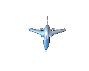
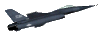
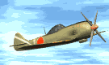
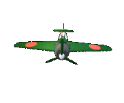
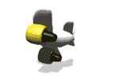
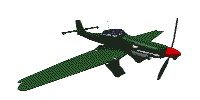
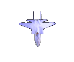

 Al sancionar esta primera ley aérea el señor presidente de la república don José Vicente Concha exclamó: " Está muy cercano el día en que Colombia tenga su propia aviación".
Conocidas las experiencias de la primera guerra mundial sobre el empleo de la aviación como arma de combate, una vez superados los problemas económicos, el congreso colombiano exhortado por el señor presidente Marco Fidel Suárez demostró la necesidad de que las instituciones militares fortalecieran sus capacidades introduciendo definitivamente en su organización las unidades aéreas.
De esta manera se originó la aviación militar en Colombia y se sancionó la ley 126 de 1919 como punto de partida de la Fuerza Aérea Colombiana.
A menos de un año de iniciada la Gran Guerra Europea o Primera Guerra Mundial, y ante los ostensibles desarrollos y efectos prácticos de la aviación en dicha conflagración, un grupo de 19 insignes colombianos conforman el Club Colombiano de Aviación con el propósito de promover por todos los medios posibles el desarrollo aeronáutico de nuestro País.
Gracias a sus esfuerzos el Gobierno Nacional, encabezado por el Presidente José Vicente Concha, y el Congreso de la República expiden la Ley 15 del 7 de Septiembre de 1916, en la que se contempla el envío de una "Comisión de Estudios Militares" al exterior para adelantar, entre otros, estudios de Aviación Militar con el fin de que a su regreso los seleccionados prestaran el servicio de aviadores, directores e instructores de una Escuela de Aviación, cuyo establecimiento quedaba igualmente ordenado por la misma Ley, la cuál también preveía el apoyo gubernamental para los clubes o centros científicos dedicados al desarrollo y establecimiento de la aviación en Colombia.
Pero así como fue la Guerra Mundial la chispa que indujo a la expedición de dicha Ley, fue también la causante de que no se hiciera efectiva pues las dificultades económicas que generó se extendieron por todo el orbe, incluido nuestro País, que vio mermados sus ingresos y se encontró impedido de llevar a la realidad tan visionaria disposición.
Pero el ánimo progresista no desfalleció, hacia el 18 de junio de 1919, los barranquilleros presenciaron el primer vuelo de un avión en Colombia, suceso histórico protagonizado por el norteamericano Knox Martín, este evento, que conmocionó a la nación entera, fue la nueva chispa que encendió de nuevo los anhelos colombianos de contar con aviación.
A raíz de ello y a la insistencia de varias personalidades, el Congreso Nacional estudiaba la creación de la Quinta Arma del Ejercito: era la Aviación Militar. Se buscaba que Colombia no se quedara rezagada respecto a los países más desarrollados que ya contaban con avanzadas ramas de aviación militar. Fue así como para Diciembre 31 del mismo, se expidió la ley 126 sobre el particular dándole las correspondientes atribuciones y facultades al gobierno, esta Ley fue inmediatamente sancionada por el entonces Presidente de la República, Don MARCO FIDEL SUÁREZ, con la firma de su Ministro de Guerra, Doctor Jorge Roa.
A mediados de 1920 el Gobierno contrató en Francia, y trajo al país, la primera Misión de instructores de Aviación compuesta por el señor: Coronel Rene Guichard, como jefe piloto, quien ostentaba varias honrosas condecoraciones y era miembro de la Legión de Honor Francesa y por los señores Jean Jonnard y José Island como pilotos instructores; Paul Poillot y Lucien Sloscher como mecánicos instructores.
Todos ellos habían tomado, al servicio de Francia, parte activa en el conflicto Europeo, llamado la Primera Guerra Mundial o la Gran Guerra, que terminó en 1918.
 El material Aéreo original de la aviación Militar se constituyó así:
- 3 aviones de Escuela, "CAUDRON G-3", con un motor rotativo Francés le Rhone, de 80 HP.
- 4 bimotores "CAUDRON G-4, de bombardeo e instrucción avanzada, bimotores, igualmente provistos de motores Le Rhone.
- 4 aviones "NIEUPORT DELAGE", de caza, monoplazas, con idéntico motor.
Avión Caudron G-3
Estos aviones carecían de frenos y en aquella época no se habían ideado los trampolines para trancar las ruedas cuando el motor funcionaba y por ello los estudiantes o alumnos debían sostenerlos de las alas.
 La Misión francesa estudió las condiciones del país e inicialmente escogió, por las buenas condiciones del terreno, las llanuras cercanas a la ciudad de Mariquita como lugar para que funcionara la Primera Escuela de Aviación Militar, pero por igualdad de circunstancias y mayores facilidades de conexión con la capital de la República, se designó de preferencia el corregimiento de Flandes (Tolima) para sede de la Escuela, acondicionando como aeródromo un terreno cercano a orillas del Río Magdalena y próximo a la ciudad de Girardot.
Allí se improvisó una pista de 300 metros de largo por 40 de ancho y se construyeron 6 grandes cobertizos de guadua y teja metálica que servían de hangares talleres y almacenes.
El Decreto 2172 del 10 de Diciembre de 1920 desactivó la ley 126 de 1919 y creó la Sección de Aviación Militar, dependiendo directamente del Ministerio de Guerra, que más tarde se constituiría en el Departamento 8 del Ministerio de Guerra, División General de Aviación Militar, mediante decreto Nº. 2065 del 1º de Diciembre de 1932.
El Decreto Nº 208 de 1921 nombró el personal de alumnos pilotos y mecánicos que principiaron labores en Flandes el 1º de Febrero del mismo año, entre los alumnos pilotos figuraban los siguientes:
 - José I. Forero quien efectúa su vuelo solo el 30 de marzo de 1922.
- José I. Forero quien efectúa su vuelo solo el 30 de marzo de 1922.
- Justino Mariño que voló solo el 12 de Febrero de 1921.-Q Marco T. Lizarazo.-Q Luis E. Sepulveda.
- Benjamin Méndez Rey.
- Luis E. Pérez.
- Los cadetes, Benjamín Méndez Rey y Justino Mariño
El Primer Héroe
Entre algunos oficiales Pilotos que se recuerdan por su vuelo solo en aquella época se recuerdan los siguientes: Coronel Efrain Rojas, Teniente Delfín Torres Duran, Teniente Eduardo Gómez Posada y Teniente Abraham Liévano, pero especialmente el Mayor Félix Castillo Mariño, quién siendo el Subdirector de la Escuela y ante los insistentes y preocupantes rumores de que el Congreso y el gobierno planeaban cerrar la Escuela, realizó un acto heroico.
Resulta que a la sazón el presupuesto de Colombia totalizaba treinta millones de pesos y el haber creado y mantener en funcionamiento la Escuela de Aviación Militar le costaba al erario público algo más de ochocientos mil pesos, suma que parecía exageradamente alta para dotar al país de una aviación militar que, según sus detractores, no parecía necesitar el país, más aun si se tenía en cuenta que costaba casi tanto como sostener a casi todo el Ejército. Por ello, ante la presión de la prensa y del público el Gobierno Nacional y el Congreso estaban considerando seriamente el cerrarla.
Otro factor que se sumaba a la crisis radicaba en el hecho de que ya pasaban varios meses de iniciadas las actividades y ningún colombiano había volado por sus propios medios.
 El día 18 de Junio de 1921, el Mayor Castillo, le ordenó al Técnico Justino Mariño que le alistara un avión para practicar carreteo, es decir el movimiento controlado en tierra del avión, tras unos cuantos desplazamientos le dijo al técnico que iba para la pista a ensayar la carrera de despegue, ya en posición inició la carrera de despegue "simulada" pero cuando los presentes esperaban que cortara el motor, de repente se elevó en forma vacilante y peligrosa, todos se aterraron pues sabian que solo tenía a cuestas 4 lecciones de vuelo doble comando, a todas luces impreparado para volar solo el avión, sin embargo ahí estaba, elevándose poco a poco y tomando confianza, con el aeroplano controlado se enfiló hacia Girardot tomando altura.
El personal de la misión francesa, que se encontraba en su mayoría en la ciudad, al escuchar el sonido del avión y conocedores de que en la Escuela no había nadie capacitado para dictar instrucción, salieron despavoridos en dirección a Flandes.
A su llegada vieron como el Mayor, después de varios minutos sobrevolando la región a unos tres mil pies de altura, se enfilaba hacia la pista, el Jefe de la Misión y Director de la Escuela, el Coronel Guichard, tan solo atinaba a decir "Mon Dieu, Mon Dieu..." pues temía un desenlace fatal.
El avión piloteado por el Mayor Castillo se aproximaba a la pista con movimientos erráticos, bajaba y subía la nariz en forma peligrosa, todos se tomaban la cabeza con las manos y algunos daban por momentos la espalda tan solo esperando oir el fatídico choque contra la tierra, pero haciendo gala de sangre fría y tesón, tan propios de los colombianos, el Mayor castillo controló su avión en el último momento y logró aterrizar sin el menor daño para él o su aeronave.
Se hizo el silencio por un momento y luego todos fue algarabía y gozo, los colombianos gritaban hurras a Colombia y hurras al mayor Castillo. Pronto la noticia se regó como pólvora por todo el País, los colombianos si eran capaces de volar por sus propios medios y sin ningún instructor extranjero abordo, este acto que, aunque fue una indisciplina de vuelo, no por ello dejó de ser heróico e impidió la clausura de la naciente Escuela.
 Lo que hizo posible que el 22 de Enero de 1922, algo más de seis meses después, se iniciaran de manera formal los vuelos solos de los alumnos de la Escuela. Quién tuvo el honor de realizar el primer vuelo solo oficial fué el entonces Cadete Jose I. Forero, quién llegó a ser un reconocido Oficial FAC alcanzando el grado de Coronel.
Pero la situación económica de Colombia en aquélla época no facilitaba las cosas. La amenza de cierre de la Escuela no había desaparecido y es así como, a pesar de los notables éxitos alcanzados, el Gobierno emitió el Decreto No. 580 del 28 de Abril-1922, el cuál ordenaba el cierre de la Escuela. Con desazón, los jóvenes pichones de pilotos se desbandaron, algunos, otros continuaron en el Ejército y algunos más decidieron continuar con sus estudios de pilotáje ya fuera en las nacientes empresas de aviación, tal como la famosa SCADTA, e incluso en el extranjero.
Afortunadamente varios entusiastas y defensores de la aviación no se resignaban al cierre de la Escuela y así, trás dos años de gestiones, lograron que la Escuela fuera reabierta, esta vez en Madrid, Cundinamarca, el 8 de Noviembre de 1924, de ahí, tal vez en forma equivocada, que el día de la FAC se celebre en ese día.
En esta nueva etapa, debido al daño y descomposición de los aviones originales, hubo necesidad de renovar el equipo volante con la incorporación de 4 aviones suizos Wild WT de entrenamiento, y 9 Wild X de ataque y observación, solo sobrevivian un Caudron G-3 y un G-4 de la Escuela de Flandes.
Esta vez fue una misión suiza la responsable de continuar con la conformación de nuestra aviación militar.
Sin embargo el nuevo esfuerzo tuvo un fuerte tropiezo cuando otra vez se cerró la Escuela en Diciembre de 1928. Pero, como el Ave Fénix, tan solo 4 meses después se logró su reapertura definitiva. El 20 de Marzo, 1929, de nuevo con una misión francesa, se reiniciaron las actividades de la Escuela y por tanto de la avaición militar.
Así continuó desarrollándose y fortaleciéndose poco a poco, tratando siempre de estar acorde con los últimos adelantos y las nuevas tecnologías. Hasta que llegó su prueba de fuego.
Como un gigante dormido, la FAC respondió con creces a la nación entera la confianza y el esfuerzo en ella depositadas, en el complejo compromiso que le creó el Conflicto del Sur, 1932-1934, originado con la invasión y anexión por parte del Perú de vastos territorios sureños,incluyendo a Leticia. En esta epopeya, la Fuerza Aérea fue el factor determinante para repeler la agresión y recuperar para nuestro País tan extensos territorios.
 Durante el conflicto los aviadores de la FAC demostraron su profesionalismo y valentía obligando a la huída de las aeronaves agresoras y apoyando a las tropas de superficie para el exitóso cumplimiento de sus misiones. Las dos batallas de mayor recordación de esta heroica actuación fueron las de Tarapacá, Febrero 14-1933, y Güepí, Marzo 26-1933.
Aunque hubo algunos derribos de aeronaves de lado y lado, estos fueron realizados siempre por la artillería antiaérea de ambos bandos, pero el 8 de Mayo de ese mismo año nuestros aviadores se anotaron el primer derribo de la guerra en un combate aire-aire cuando abatieron un avión Douglas O-38 P del Perú. Es de resaltar que al inicio del conflicto el Perú contaba con una aviación militar muy superiormente dotada. Pilotos condecorados con la Orden de Boyacá por sus actos de valor en el conflicto colombo- peruano; entre ellos Camilo Daza, Andrés M. Díaz, Benjamín Méndez Rey y Luis F. Gómez Niño.
Mientras Colombia tan solo contaba con un único avión de combate, un Falcón O-1, 8 Wild X de entrenamiento y ataque, 3 Fledgling de entrenamiento y 4 Osprey C-14 de entrenamiento, la aviación militar peruana se componía de 6 escuadrones de combate, 2 de entrenamiento, 1 de reconocimiento, 1 de enlace, 1 de transportes y 1 aeronaval, y sin embargo en el curso del conflicto nuestros aviadores no solo respondieron al desafío sino que superaron con creces al enemigo.
Las épocas doradas y la reorganización de la FAC.
Al concluir el conflicto nuestra Aviación Militar se había transformado en una verdadera Fuerza Aérea, dotada con cerca de 145 modernas aeronaves de todos los tipos, viviendo así la FUERZA AÉREA COLOMBIANA su primera Época Dorada.
Estas circunstancias y las subsiguientes, demandaron una reestructuración consecuente proporcionada a la realidad aeronáutica mundial y fue así como el gobierno emitió el Decreto Nº 1680 del 15 de Julio de 1942, que determinó la separación total y definitiva de la aviación militar y de la civil, hasta la fecha unidas en un solo ente jurídico denominado Dirección General de Aviación. Nació así la Fuerza Aérea Nacional, totalmente independiente de la Aeronáutica Civil, novedad que se presentó durante el mandato del Presidente Eduardo Santos, siendo Ministro de Guerra Gonzalo Restrepo.
Dos años mas tarde en virtud de la ley Nº 102 del 31 de Diciembre de 1944, nuestra institución de nuevo, y en atención a la importancia que había cobrado, cambió su nombre para convertirse en FUERZA AÉREA COLOMBIANA, tercer integrante del componente militar Colombiano con autonomía y doctrina propias, dependiendo definitiva y directamente de la Jefatura del Estado Mayor General de las FF.MM.. Esta ley 102 que dictaba disposiciones sobre la organización y el mando se produjo durante el Gobierno de Alfonso López Pumarejo siendo Ministro de Guerra el General Domingo Espinel.
Debemos recordar que a lo largo de todo este proceso, se estaba viviendo la Segunda Guerra Mundial (1939-1945), debido a la conflagración mundial y al proceso de reestructuración de nuestra aviación militar, fue que la FAC vivió su segunda época dorada, en respuesta a las crecientes amenazas y necesidades planteadas por el conflicto, se inició un proceso de modernización que se extendió de 1940 a 1947 y se realizó tanto en el plano de la preparación profesional de Oficiales y Suboficiales, así como en el de la adquisición de modernas aeronaves.
Al finalizar este periodo la FAC había incorporado un total 313 nuevos aviones distribuidos en 10 tipos diferentes de aeronaves.
El primer Comandante de la Fuerza Aérea Colombiana como tal fue el Coronel Arturo Lema Posada quien rigió sus destinos entre 1943-1945.
Posteriormente, esta vez en respuesta a la Guerra de Corea (1950-1953), se vivió un nuevo proceso de desarrollo y crecimiento que inició en 1950 y concluyó en 1955, para esta tercera época dorada la FAC renovó su material volante con la adquisición de 10 nuevos equipos que sumaban 263 aeronaves. Esta época se destaca por las enormes transformaciones vividas por la FAC, inicialmente se destaca la llegada del helicóptero por primera vez a nuestro país, hecho histórico ocurrido en 1953 con la entrada en servicio del equipo Hiller OH-23B Raven.
 Posteriormente en solo tres años se vivieron sendos hechos históricos que transformaron nuestra Fuerza Aérea. En 1954 la FAC y Colombia ingresaron a la Era del Jet, con la adquisición de los primeros aviones a reación, los famosos entrenadores Lockheed T-33 Silver Star, seguidos al año siguiente por los primeros aviones de combate a chorro, los Lockheed F-80 Shooting Star, y luego, en 1956, se dio otro enorme avance al evolucionar de la era del jet a la Era Supersónica, con la entrada en servicio de los modernos caza Canadair Mark IV (versión canadiense del North American F-86 Sabre de los que se adquirieron 4 unidades en 1963) capaces de desarrollar una velocidad máxima de mach 1.1.
La FAC de nuestros días
Después de estas épocas memorables el desarrollo de la FAC ha sido más parejo y continuo. Se destacan eso si, dos aspectos importantes, el primero ocurrido en 1972 con la llegada de los caza-bombarderos Marcel Dassault M-5 Mirage, capaces de volar a dos y media veces la velocidad del sonido gracias a su posquemador. Por otra parte se destaca el importante papel jugado por el helicóptero a raíz del cruento e injusto conflicto interno sufrido por Colombia por causa de las organizaciones subversivas, el vital papel jugado por el helicóptero en apoyo a las fuerzas de superficie y en defensa de nuestra integridad territorial se ha hecho evidente con la incorporación de equipos ocurrida en 1988 con la compra de 10 modernos Sikorsky UH-60A Black Hawk y en 1990 con la llegada de 20 UH-1H.
Equipos que, al igual que los M-5 y los Kfir supersónicos, los A-37 de combate y apoyo táctico, los turbohélice OV-10 de apoyo táctico, los entrenadores T-34 Mentor, y los ya renombrados Douglas Ac-47 Fantasma, se han venido modernizando para mantenerlos al día y con plena capacidad operacional para responder a las necesidades del País, complementándose este proceso con la adquisición de modernos equipos tales como los turbohélice Embraer T-27 Tucano, de entrenamiento avanzado, los CASA CN-235 Nurtanio de transporte, o los Schwaizer y Cessna C-337 Skymaster de inteligencia. Aronaves todas, que en conjunto con muchas otras que resultaría muy extenso relacionar, comandadas, tripuladas y mantenidas en vuelo por Oficiales y Suboficiales de gran profesionalismo, hacen de la Fuerza Aérea Colombiana una organización dinámica, moderna y efectiva que en todo momento lucha por defender la libertad y la vida de los colombianos.